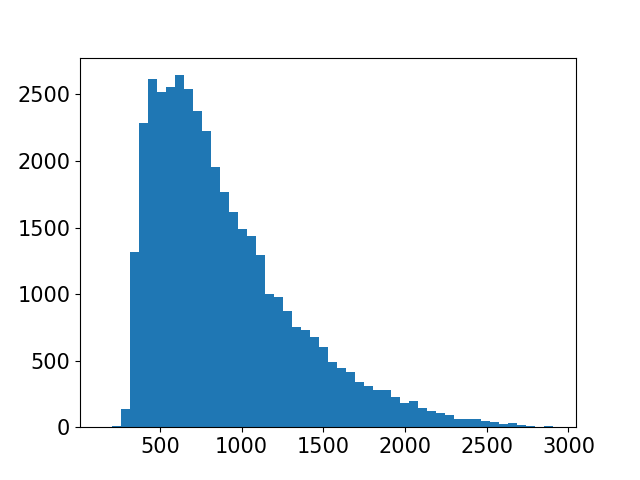

SEENOPSIS
The file you are investing has 9999 records and 9 variables
This is the seenopsis of your file:
| Variable Name | Type | Graphic Representation | Basic Statistic | Missing | Outliers (n) |
|---|---|---|---|---|---|
| 1 | Continuous variable
(int64) |  |
Min: 2
Max: 10000 Mean ± SD: 5001.0 ± 2886.46 Median (IQR): 5001.0 (2501.5, 7500.5) | n=0
0.0% |
0 |
| Muhammed MacIntyre | Text/Date variable |  |
Text/Date variable -
only top 10 values are presented |
n=0
0.0% |
Text/Date variable
No outliers |
| 3 | Continuous variable
(int64) |  |
Min: 6
Max: 59973 Mean ± SD: 30706.32 ± 17264.79 Median (IQR): 31619.0 (15781.5, 45126.0) | n=0
0.0% |
0 |
| -213.25 | Continuous variable
(float64) |  | Min: -14140.7
Max: 27220.69 Mean ± SD: 176.13 ± 1219.21 Median (IQR): -1.73 (-83.86, 165.5) | n=0
0.0% |
2019 |
| 38.94 | Continuous variable
(float64) |  |
Min: 0.99
Max: 6783.02 Mean ± SD: 92.4 ± 315.96 Median (IQR): 20.99 (6.48, 85.99) | n=0
0.0% |
1015 |
| 35 | Continuous variable
(float64) |  |
Min: 0.49
Max: 164.73 Mean ± SD: 12.78 ± 17.17 Median (IQR): 6.05 (3.26, 13.99) | n=0
0.0% |
1152 |
| Nunavut | Text/Date variable |  |
Text/Date variable -
only top 10 values are presented |
n=0
0.0% |
Text/Date variable
No outliers |
| Storage & Organization | Text/Date variable |  |
Text/Date variable -
only top 10 values are presented |
n=0
0.0% |
Text/Date variable
No outliers |
| 0.8 | Continuous variable
(float64) |  |
Min: 0.35
Max: 0.85 Mean ± SD: 0.51 ± 0.14 Median (IQR): 0.52 (0.38, 0.59) | n=76
0.8% |
0 |